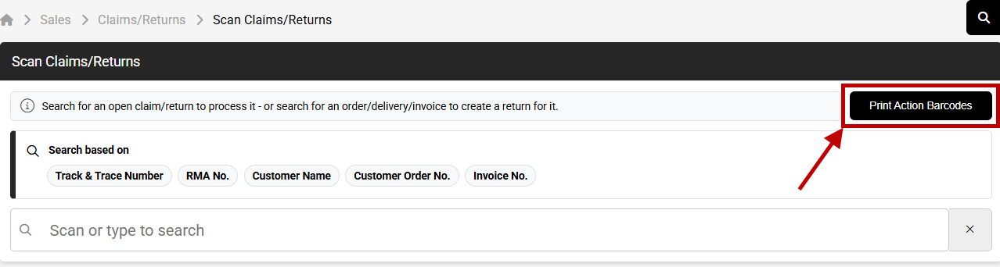
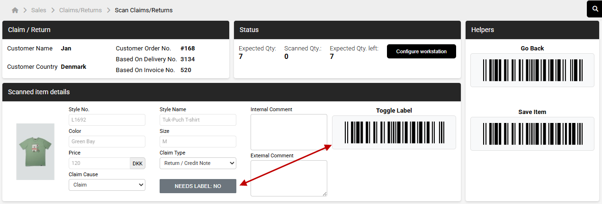

Ny Returhåndtering i SPY
Direkte integration mellem Shopify Returportaler og SPY – for nemmere og hurtigere håndtering af B2C returneringer
Hvad er nyt?
Vi har udvidet vores returhåndtering, så I nu både kan starte og scanne en retur direkte i SPY. Derudover er vores Shopify-integration blevet udvidet med returhåndtering fra returportaler, så disse passer ind i en ny arbejdsproces i SPY.
Det betyder, at I nu har mulighed for nemmere returhåndtering i jeres forretning med de muligheder, en returportal kan give – såsom ombytninger, returlabels og hurtigere refunderinger.
Returportaler & Apps
Enhver portal, der understøtter vores proces, kan bruges. Vi har testet og har kendskab til følgende:
returnflows.com
- Intet opsætningsgebyr (normalt 2.500-10.000 kr.)
- Ingen ekstra pris pr. marked (normalt 250 kr/md)
- 30 dages gratis prøveperiode
✉️ jeppe@returnflows.com
floatreturns.com
- Intet opstartsgebyr
- Ingen ekstra gebyr for flere shops/markeder
- 60 dages gratis prøveperiode
Ønsker I at bruge en anden returportal end ovenstående? Ræk ud til os, så vi kan starte en dialog omkring jeres ønskede løsning.
Den overordnede proces
Slutkunden bruger den tilgængelige returportal til registrering af returen – herunder valg af ordrer, varer og muligheder som fx returlabel, refundering eller ombytning.
Selve varehåndteringen sker i SPY: Håndtér pakken ved modtagelse på lageret med bordscanner/håndscanner. Godkend, refundér eller ombyt fra SPY, og integrationen opdaterer automatisk Shopify.
- Gavekort: Det er pt. ikke muligt at udstede gavekort i stedet for tilbagebetaling – men vi arbejder på det.
- Price Reduction: Funktionen i SPY understøttes ikke i kombination med Shopify Returportaler.
- Copy/Credit: Via Sales → Invoiced bruges stadig til krediteringer uden returportaler.
Vælg din metode
Der er 3 måder at håndtere B2C-returneringer i SPY. Vælg den, der passer til jeres situation:
• Claim Cause – årsagskode for returen
• Claim Type – "Return/Credit Note" (på lager) eller "Claim/Credit Note" (ikke på lager)
• Needs Label – slå til, hvis I ønsker print af ny style-label
Returen ligger nu under Sales → Claims/Returns → Confirmed. Tilbagebetalingen går automatisk tilbage til det oprindelige betalingsmiddel (kreditkort, gavekort osv.). SPY følger fragtbeløbet fra returportalen.
Når systemet registrerer en ombytning via returportalen:
- Varerne reserveres på lageret med det samme – så de er klar til den nye ordre.
- Den "nye" ordre venter, til varerne fra den oprindelige ordre er registreret retur.
- SPY håndterer automatisk eventuel ekstra betaling via Shopify, hvis der er prisforskel.
SPY håndterer først kreditering eller opkrævning, når både returen og ombytningen er færdiggjort i SPY. Ombytninger, der ikke er lavet via en integreret returportal, kræver stadig en manuel arbejdsgang.
• Claim Cause, Claim Type, og om der skal printes ny label.

Hvis slutkunden selv skal betale for returfragten, skal værdien i "Freight Refund" være negativ.
Har I en ekstern lagerintegration, der allerede behandler B2B-retur via eksportfunktionen (RECADV/Entry), gør en returportal det endnu nemmere – flowet er automatisk:
Returen eksporteres til lageret som en B2B-retur. Når lageret tilbagemelder, dannes kreditnota og tilbagebetaling automatisk.
Kontakt jeres lager og indgå aftale om den nye håndtering – det påvirker deres arbejdsgang. Returen vil ligge under Sales → Delivered, indtil lageret tilbagemelder.
Tip & Tricks
I kan printe jeres "Claim Causes" og "Claim Types" ud som stregkoder. På den måde slipper I for at trykke på PC'en – i stedet vælger I ved at scanne den relevante stregkode. Perfekt til at speede arbejdsgangen op!
Ligesom det er muligt at navigere med bordscanneren ved at scanne funktioner med stregkoder, kan I også skifte "Needs Label" til/fra ved at scanne på "Toggle Label".
Aktivér feltet: "Handle Returns"